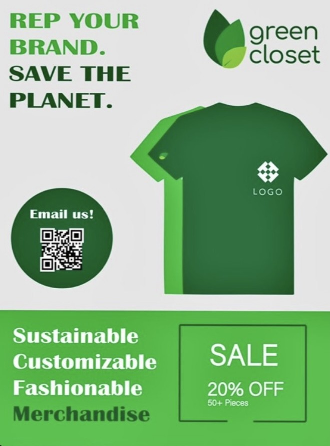
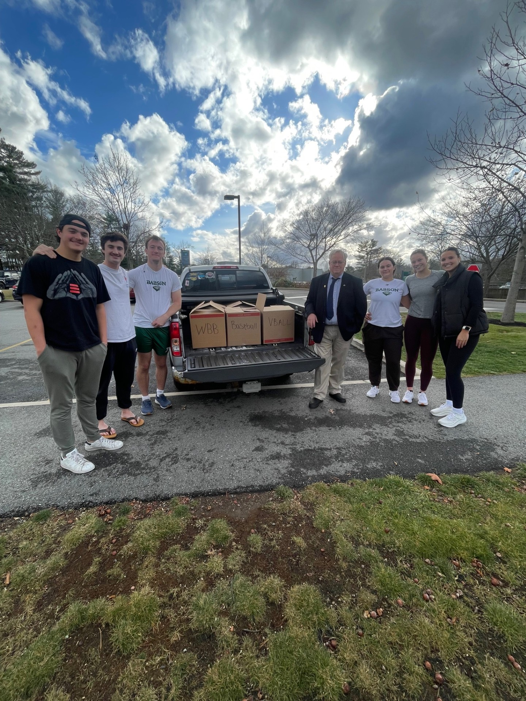

During my freshman year at Babson, through the FME entrepreneurship group, with a group of students I created Green Closet a clothing brand focused on school spirit and sustainability in an industry known for waste. We produced and sold Babson t-shirts with elegant designs meant to enhance school spirit. The shirts were made of organic cotton which uses 92% less water in production than alternative forms of cotton. The shirts were produced in Turkey in accordance to all fair labor standards.
I was apart of the green closet team from its inception and led the process of pivoting from our initial idea of using plastic waste collected from the ocean in the production of our shirts. Once our products were in production I shifted my focus to marketing the product, mainly using digital media and eye-catching skits to capture attention in a crowded advertising environment. Our venture ended up turning a profit greater than $1000 which was donated to a charity supporting production of organic cotton.

This fall I was named the head of the community service board of SAAC (student-athlete advisory council). My first major initiative as head of community service was organizing a Thanksgiving food drive with a local organization. I had a connection with the Boston Housing Authority from high school and knew that they provided many people in Boston with food around Thanksgiving. I reached out to them and the rest of SAAC and was pleased that there was mutual interest.
The food drive ended up being a massive success with the entirety of Babson Athletics participating. We were able to provide ~50 families with food for Thanksgiving. Getting Babson Athletics involved with the Boston Housing Authority for the Thanksgiving food drive was special to me as I was able to connect a community with so much to give with a group that could use support. I was really moved by the amount of participation from my fellow athletes. I hope that Babson Athletics supports the Boston Housing Authority for years to come.

As a part of Len Green's Ultimate Entrepreneurial Challenge course this past fall, groups were given case studies that they would then have to present their findings to business executive from the company discussed in the case. One of my better presentations came when we were given a case on Vitamin Water and how it was able to compete in a saturated drink market. I focused my analysis on how Vitamin Water changed the way celebrity partnerships were constructed forever when they partnered with rapper, 50 Cent. Where most companies gave celebrities a large sum of money, Vitamin Water had limited capital and opted to give 50 Cent equity in the company.50 Cent was already a huge fan of the beverage and could connect with the company as they both were underdog success stories with ties to New York.
I thought a creative and engaging way to build my presentation would be to use 50 Cent lyrics that described why their partnership was successful for both parties and so unique for the time period. The pre-recorded video presentation captured the gritty, hustler mentality that allowed Vitamin Water founder, Mike Repole, to be such a success. Mike Repole really enjoyed my presentation and highlighted how taking unique approaches that authentically connect people, giving people a vested interest in a company's lasting success and striving for product excellence were the keys to his success with Vitamin Water, NoBull, and BodyArmor.